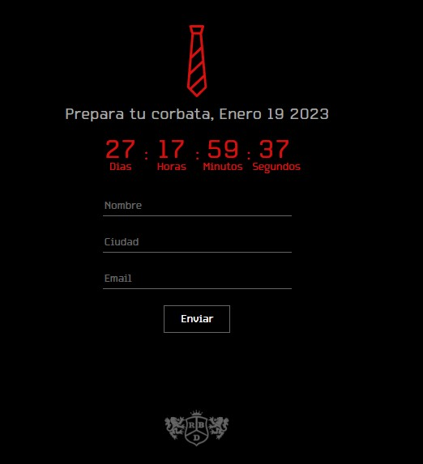

Lalo España dice ser un solterón muy feliz porque no encuentra un hombre para el amor

Con 'reel' que rinde homenaje a la amistad que existe entre ellos confirmaron que el regreso de RBD es oficial y está más cerca de lo esperado.
Con un reel que rinde homenaje a la amistad que existe entre ellos a pesar de la distancia y el tiempo, cada uno de los integrantes —excepto Poncho Herrera— confirmó que el regreso de RBD es oficial y está más cerca de lo esperado.
El 19 de enero de 2023 es la fecha que la agrupación de pop ha elegido para terminar con la espera de sus fanes a nivel mundial. No se conoce con precisión si en esta fecha regresarán a los escenarios o lanzarán su cronograma de gira, pero lo cierto es que la rebeldía popera se volverá a tomar los escenarios el siguiente año.
La página oficial soyrebelde.world //soyrebelde.world, que días atrás había colapsado por la cantidad de visitas, ya está disponible para que las personas puedan registrarse con su nombre, e-mail y ciudad.
Mientras tanto, una cuenta regresiva se cola debajo de la oración: “Prepara tu corbata, Enero 19 2023”, aumentando de esta forma la emoción que embarga a una nostálgica fanaticada que habita en varios países del mundo, entre ellos Ecuador, por supuesto.
